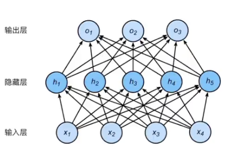
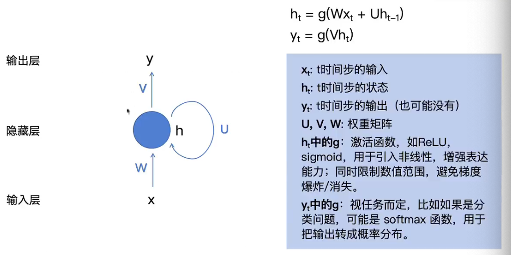
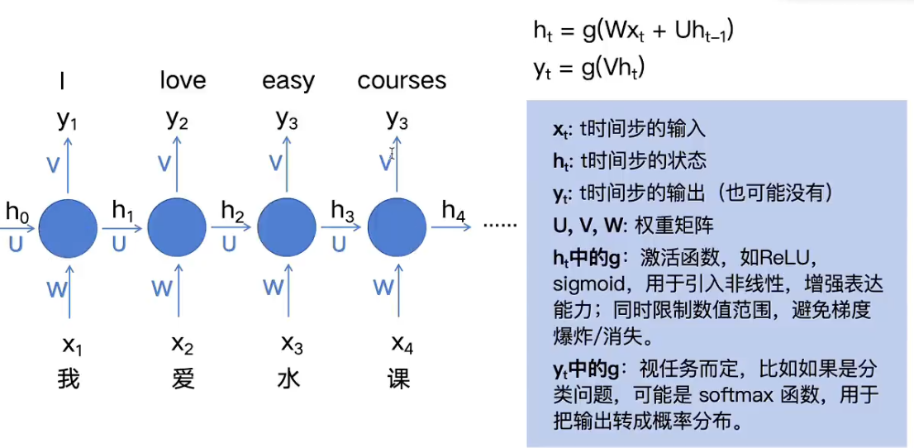
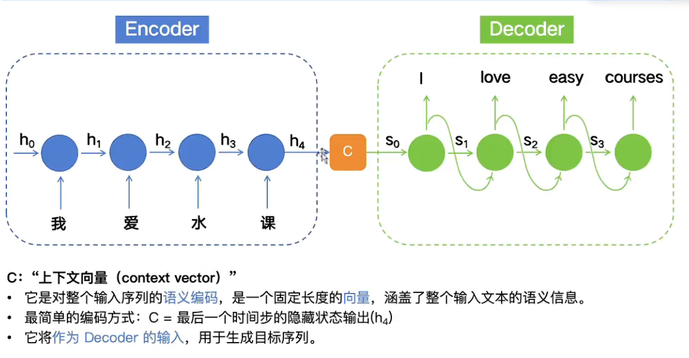
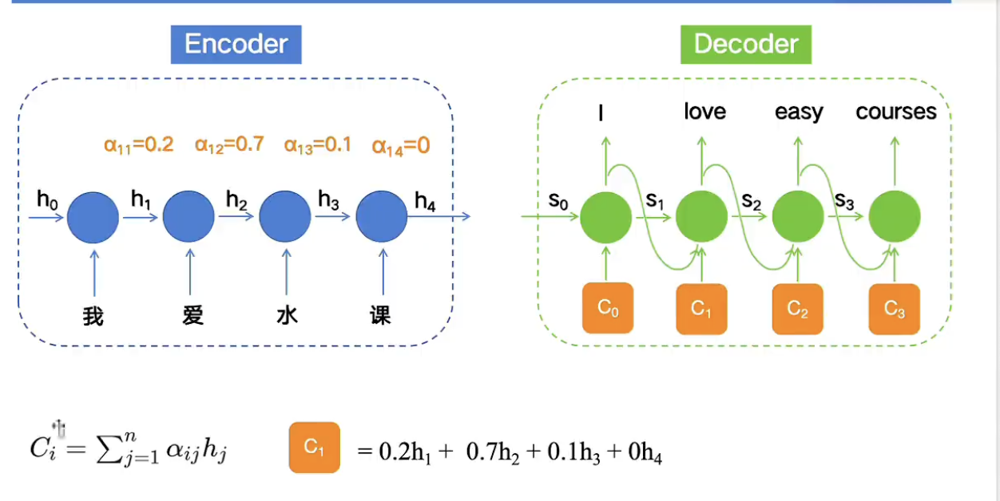
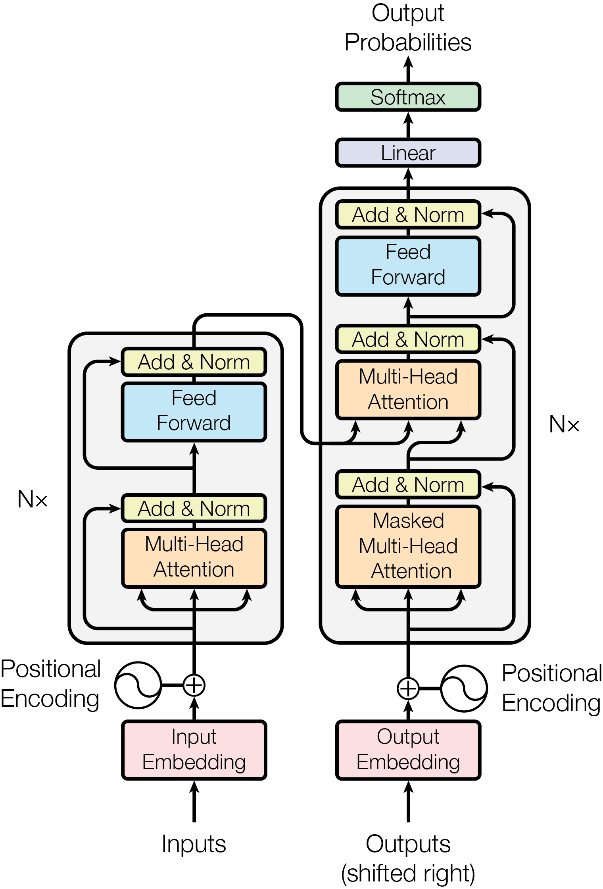

Transformer精读-AttentionIsAllYouNeed
阅读思路
- 以往的模型存在的问题/瓶颈——结构的哪些缺陷导致了性能的有限
- Intro和BG
- 论文提出的注意力结构解决了什么问题，为什么可以解决
- 核心：Transformer架构和Self-Attention机制
- 对应：Model ，Why Self-Attention
Abstract
Transformer之前的sequence transduction models（序列传导模型）：
- 复杂的循环
- 卷积为基础：RNN/CNN
- encoder-decoder结构
- 表现好的模型大多接住了Attention机制链接或增强
Transformer结构的创新：
- 完全摒弃RNN/CNN的结构
- 仍使用encoder-decoder
- 完全基于注意力
Introduction
Feedforward Neural Network（FNN)

不适合做序列转导的原因
在做Embedding的时候，对词向量有两种处理方式，但对于FNN来说都损失了一定的信息：
- 平均：丢失词语顺序信息
- 拼接：
- FNN需要固定维度的输入，但句子通常长度不同，FNN处理效率低下
- 同样失去顺序信息
Recurrent Neural Network（RNN)


解决的问题：
- 保留顺序信息： RNN按照时间顺序接收Token的输入
- 保留上下文以来：RNN有记忆机制
- 支持不定长输入
潜在问题：
- 难以处理输入输出不等长问题
- 梯度消失或爆炸（me）
Encoder-Decoder
简单理解：将RNN的上下两个部分拆来来做，encoder只管输入，decoder只管输出

- C为h4的的输出，涵盖整个文本语义信息
潜在问题：
- 远距离遗忘：处理长序列，可能以往较远的信息
- 无重要性区别：序列中各个元素的贡献度和重要程度不同
注意力机制

解决：
- 长序列遗忘问题：对序列中元素加上不同的权重
- 解决不同时间步对当前时刻输出的“重要性”问题：所有时间步的输入在计算当前时刻输出时被同等对待，忽略不同时间不对当前时刻输出的重要些可能存在差异
Introduction中介绍了RNN系列的研究，并提到注意力机制通常是和RNN一起使用。
Background
关于CNN
为解决顺序计算问题，引入CNN以支持并行，但难以捕捉远距离关系。
介绍注意力机制
- 自注意力机制
- Memory Network的递归注意力机制
本文
- Transformer是首个完全基于自注意力，无需使用RNN/CNN 的序列建模模型
Model Arch
token: 512
首先，如何解决的串行计算问题。
串行计算主要发生在以往模型的encoder部分，所有的后面的token必须等待前面的输入完成才能参与计算。
Encoder
但是对于翻译任务，待翻译的文本全局已知，需要设计一种方法，让排在后面的token可以同时接收到前后文的影响，参与计算。
这种计算涉及到两种信息：
- 该序列中所有token的向量
- 每个token在序列中的位置信息
由于翻译文本同样是已知的答案，且，对于已经翻译完的部分来说，这个部分的答案对模型是可见的——后续的部分理论上对于模型是不可见的，就使用mask遮住，不进入decoder进行计算。
所以在decoder处，模型顺序生成翻译后的文本，且decoder接收每次生成后的答案作为输入——decoder的输入来自两个地方：encoder输出和自己上一步的输出

关键模块：
- （Masked）Multi-Head Attention
- Feed Forward
参数：
- $N\times$：可以任意堆叠，论文N=6
- Transformer的encoder和decoder输入输出维度不会发生变化
计算流程
- Inputs DO Embedding GET tensor
- Inputs 的各个单 DO position encoding GET pe
- 使用正弦和余弦函数编码：
| $PE(pos,2i)=sin(pos/100002i/dmodel)$ |
|---|
| $PE(pos,2i+1)=cos(pos/100002i/dmodel)$ |
- tensor = pe + tensor
进入encoder - 每个token得到QKV三个矩阵，送入多头注意力
- 多头的输出，通过残差和原数据融合，再过Norm，让数值趋于稳定 GET a
- a经过 Feed Forward,它由两个线性变换组成，中间夹有 ReLU 激活函数，学习更复杂的特征
$FFN(x)=max(0,xW1+b1)W2+b2$ - 再次经过残差链接和归一化（矩阵维度不发生变化）
进入解码器：模型预测下一个输出
8. 带有掩码的多头注意力对过去的输出进行自注意力的计算 GET b
9. b经过残差和Norm
10. 编码器的输出作为K，V，刚刚的b作为Q输入到多头注意力（Q对KV问道：我的下一个输出应该是什么）
11. Feedforward+Add+Norm
找到词语：
经过Linear和Softmax
- Embedding：将词语映射到向量空间
- Transformer这种大模型，embedding模型和整个模型一起参与训练
- 位置信息的加入：让token在语义空间的含义随着上下文进行偏移，一些词语在不同语境下的含义略有差异，位置信息就可以利用上下文得到的情报对原词语的语义进行属于该文章的微调
为什么Self-Attention
一：自注意力的机制复杂度低于RNN、CNN等
二：有并行计算的能力，解决了串行等待的问题
三：模型内部学习长距离依赖能力更强
Transformer精读-AttentionIsAllYouNeed
https://zhouwentong7.github.io/2026/06/30/Transformer精读-AttentionIsAllYouNeed/